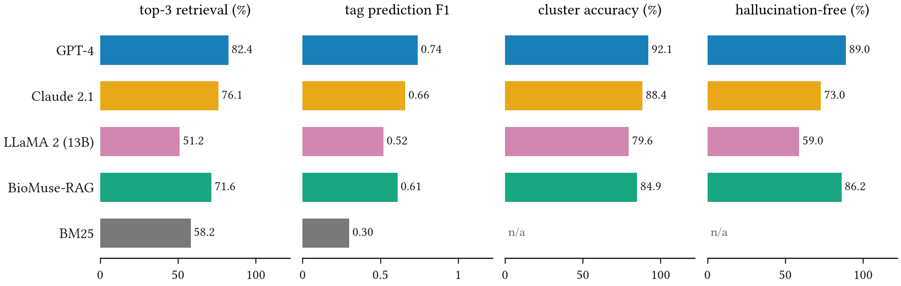
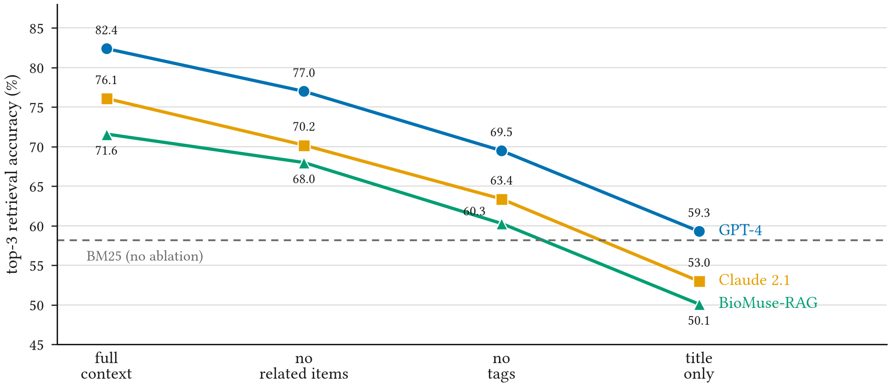

Benchmarking LLMs for Trustworthy Multimedia Retrieval in Computational Biology Using Structured Zotero Graphs
Abstract
Large language models (LLMs) are entering scientific workflows for document retrieval, summarisation and hypothesis generation, but evaluating their accuracy, domain alignment and retrieval ability in these settings remains difficult. We introduce BioMuse, a benchmarking framework that assesses the structured retrieval and reasoning of LLMs using metadata from researcher-curated Zotero libraries. BioMuse converts collections, tags, notes and related-item links into semantic graphs and document clusters, and from them generates intent-aligned tasks: citation-aware retrieval, semantic tag prediction, cluster classification and abstract-consistent summarisation. The implementation comprises a Zotero metadata parser, a standardised LLM testing interface and an evaluation engine that measures retrieval accuracy, tag F1, citation fidelity and hallucination. Evaluations of GPT-4, Claude 2.1, LLaMA 2 and a small graph-aware retrieval-augmented model across three computational biology domains reveal performance differences that standard QA benchmarks do not show. BioMuse provides a reusable pipeline for evaluating LLMs in structured scientific contexts and a foundation for adding multimedia content such as figures, images and tables.
The Library Already Knows the Answer
Researchers in computational biology increasingly ask LLMs to find papers, summarise them and suggest connections. Whether a model does this well depends on things that general QA benchmarks do not test: does it return the papers a specialist would group together, does it use the field’s own vocabulary, and does its summary say only what the paper says?
A reference manager such as Zotero already holds the answers. Over months of reading, a researcher sorts papers into collections, labels them with tags, writes notes, and links related items. This metadata records the researcher’s intent: which papers belong together and why. BioMuse uses it twice, as context that can help a model and as ground truth to score it against.
We ask three questions:
- Accuracy. How well do current LLMs retrieve, tag, classify and summarise papers when judged against a curated library?
- Structure. How much of their retrieval accuracy depends on the library’s metadata?
- Trust. How often do their summaries add claims the paper does not make?
From a Zotero Library to a Benchmark
BioMuse is a four-stage pipeline:
- Semantic graph extractor. A Python parser reads the Zotero RDF/XML export into JSON and builds a directed multigraph in NetworkX.
- Task generator. Prompts are generated automatically from the graph, so the same procedure scales to any collection.
- LLM interaction layer. Standardised prompt templates are sent to hosted APIs and local models, and every output is time-stamped and logged.
- Evaluation engine. Outputs are scored against the graph with ranking, overlap and semantic-similarity metrics.
In the graph \(G = (V, E)\), each node \(v_i \in V\) is a paper carrying its title, abstract, tags \(T_i\) and notes. An edge joins two papers that share tags, sit in the same collection, or are linked as related items. Edge weights combine the cosine similarity of the two abstracts’ embeddings \(e_i, e_j\) with the number of shared tags:
Data. We built three Zotero collections, one for each subdomain: cancer evolution, protein structure prediction and gene regulatory networks. Each holds 25–40 papers, gathered with targeted PubMed (MeSH) and arXiv queries and filtered for domain specificity, citation density and structured abstracts. Every paper was annotated with a controlled tag set developed iteratively by domain experts (merging, for example, “TF binding motif” and “TF site prediction”), a short manual summary in its note, and links to conceptually related papers.
Four tasks
- Citation-aware retrieval. Given a short description, return the matching papers. The ground truth is the paper’s graph neighbourhood: high tag overlap, shared collection, or a related-item link. Queries are manual paraphrases of real abstracts or cluster centroids projected back into text; there are 50 per domain. Scored by top-3 accuracy, precision and recall.
- Tag prediction. From the title and abstract alone, assign 3–5 tags from the curated tag set. Scored by macro-averaged F1, micro-averaged precision and recall, and Jaccard similarity.
- Cluster classification. Assign each paper to its subdomain. Scored by accuracy and the adjusted Rand index.
- Abstract-faithful summarisation. Write a two-sentence summary. Scored by ROUGE-L, BERTScore and an embedding-based hallucination detector, with manual annotation of fabrication, omission and overgeneralisation.
Systems compared
- GPT-4 (gpt-4-0125-preview) and Claude 2.1 through their APIs, both at temperature 0.2.
- LLaMA 2 13B, 4-bit quantised and fine-tuned with LoRA on 6,000 domain-specific abstracts, with greedy decoding.
- BioMuse-RAG, our retrieval-augmented system: Sentence-BERT retrieval over titles and tags returns the top 5 abstracts, which a distilled BioGPT generator conditions on.
- BM25, a classical ranking baseline, on the retrieval queries.
Every system answers the same pre-generated task instances, in randomised order, with identical prompt phrasing, in both a closed-book setting (abstract only) and an open-book setting (abstract, notes and tags). Differences are tested with paired t-tests.
Results
GPT-4 leads every task, and a small graph-aware model keeps up on trust

We observe that GPT-4 is the strongest system on all four tasks: 82.4% top-3 retrieval, tag F1 0.74, 92.1% cluster accuracy and 89.0% hallucination-free summaries. The more telling comparisons are further down.
LLaMA 2 13B does not beat BM25. Its 51.2% top-3 retrieval is below the classical baseline’s 58.2%, and the difference is not significant (paired t-test, \(p = 0.12\)). At this scale, fine-tuning an open model brings no clear gain over keyword ranking.
Trust does not follow accuracy. Claude 2.1 is second on retrieval, tagging and clustering, but only 73.0% of its summaries are hallucination-free. BioMuse-RAG is third on retrieval yet second on summaries (86.2%), close to GPT-4. Grounding generation in retrieved abstracts buys faithfulness that a larger model does not get for free.
Retrieval depends on the library’s structure
To test how much the models rely on the curated metadata, we remove it in stages: first the related-item links, then the tags, and finally everything but the title.

We observe that every model loses accuracy at every step, and the order of the models never changes. GPT-4 falls from 82.4% to 69.5% once related items and tags are gone, a drop the paper reports as significant (paired t-test, \(p = 0.03\)). With titles alone, all three models end near or below BM25 (59.3%, 53.0% and 50.1% against 58.2%). Much of what looks like model skill in retrieval is the researcher’s curation, carried into the prompt.
How the models fail
- Retrieval. GPT-4 handles synonyms and unusual phrasing well. Claude overweights frequent terms and returns generic hits. BioMuse-RAG surfaces papers that are central in the graph even when their terms are rare.
- Tagging. LLaMA 2 and Claude merge distinct concepts, such as “chromatin accessibility” and “open chromatin dynamics”. GPT-4 sometimes proposes tags that are too broad, such as “machine learning”. BioMuse-RAG, trained on tag–document associations, produces the most compact tag sets.
- Summaries. GPT-4 fabricates in 11% of summaries, for example inventing an in vivo validation. Claude’s errors are mostly semantic drift, such as swapping RNA-seq for ChIP-seq. LLaMA 2 hallucinates in 41% of cases. BioMuse-RAG has the lowest fabrication rate but sometimes says too little.
- Structure. GPT-4 and Claude often write correct summaries yet ignore the collection-level hierarchy when they classify or rank papers. BioMuse-RAG follows the graph’s topology despite far fewer parameters.
The Math, Step by Step
The video below builds the benchmark one equation at a time: the library as a graph, edge weights, how a retrieval query and its ground truth come from the graph, top-\(k\) accuracy, tag F1 and Jaccard overlap, the hallucination check, the paired t-test, and the metadata ablation.
Takeaways
- Evaluate against the researcher’s own structure. A curated library gives ground truth for retrieval, tagging and classification without new annotation.
- Report faithfulness separately from accuracy. Claude 2.1 is the second-best retriever, but its summaries are hallucination-free less often than those of the much smaller BioMuse-RAG; one score cannot rank models for scientific use.
- Pass the metadata in. Tags and related-item links are worth more than ten points of retrieval accuracy for every model tested.
- Graph awareness can substitute for scale. A small model that retrieves over the graph nearly matches GPT-4 on hallucination-free summaries.
Next, BioMuse will add figures and tables for multimodal reasoning, extend to domains such as neuroscience and environmental modelling, and release an open-source Zotero-to-BioMuse conversion toolkit.
Limitations
The benchmark is small: three collections of 25–40 papers and 50 retrieval queries per domain, so differences of a few points between models should be read with care. The ground truth reflects one group’s curation, and another researcher would organise the same papers differently. BioMuse-RAG is trained on tag–document associations of the kind the benchmark scores, which favours it on tagging. The hosted models are versioned snapshots queried at low temperature, and their behaviour may change between versions. Finally, the current tasks are text-only; the multimedia content that motivates the framework, such as figures, images and tables, is left to future work.
BibTeX
@inproceedings{tiku2025biomuse,
title = {Benchmarking LLMs for Trustworthy Multimedia Retrieval in Computational Biology Using Structured Zotero Graphs},
author = {Tiku, Sarvesh},
booktitle = {2025 IEEE 8th International Conference on Multimedia Information Processing and Retrieval (MIPR)},
year = {2025},
doi = {10.1109/MIPR67560.2025.00023}
}